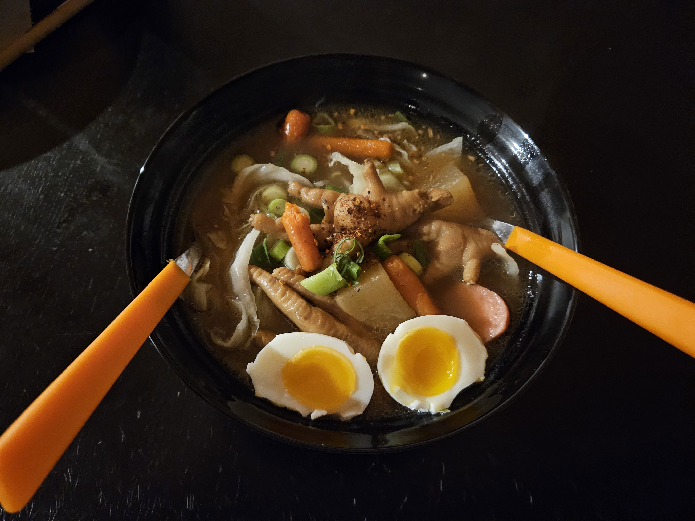

Notre cuisine
Découvrez nos plats préférés, nos recettes, nos secrets et nos coups de cœur
La cuisine est un art qui nous passionne et nous rassemble. Nous aimons partager nos recettes, nos astuces et nos découvertes culinaires avec vous. Que vous soyez un chef expérimenté ou un amateur de cuisine, vous trouverez ici des idées pour régaler vos papilles et celles de vos proches.

Kung Shae Nam Pla - กุ้งแช่น้ำปลา
Un plat thaïlandais que Papa et Maman apprécient particulièrement, savoureux, parfumé et très piquant.
Pourquoi nous l’aimons
Il rappelle la Thaïlande, les repas en famille et les saveurs que nous aimons retrouver à la maison.
Voir la recette →
Kwu tieuw tin kai - ก๋วยเตี๋ยวตีนไก่
Une soupe réconfortante et savoureuse, parfaite pour un repas en famille.
Pourquoi nous l’aimons
Elle nous rappelle les moments passés ensemble, les repas chaleureux et les saveurs authentiques de notre cuisine.
Voir la recette →